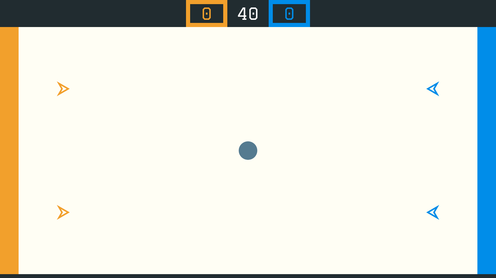

Matthieu Pizenberg, Nicolas Gaborit, Matthias Benkort, Thomas Forgione
Minimalist elm implementation of the game videoball (not affiliated to official game)
2018
This is a minimalist elm implementation of the game videoball. You play by controlling a small triangle moving around and shooting bullets on the balls to make them move to the opposite goal or on the two opponent players to stall them temporarily. It is a lot of fun! You can play the game in your browser (currently only chrome) at mpizenberg.github.io/elm-videoball. It requires 4 human players, with 4 gamepad controllers. You can check that your gamepad controllers should work at html5gamepad.com.
This is not affiliated to the official game. If you like this game, you will very much like the original one.

This game is done using the Elm programming language. We made it for the fun and to show that it is quite easy to make games in Elm. It uses elm-gamepad to handle game controllers through ports, and howler.js through ports for sounds. The game is rendered in SVG.
Regarding the architecture,
objects that can have physical interactions with each other
are in modules inside the Physical/ directory.
Other important data structures are in the Data/ directory.
Visuals are under the Views/Svg/ directory.
Have fun playing it!